01
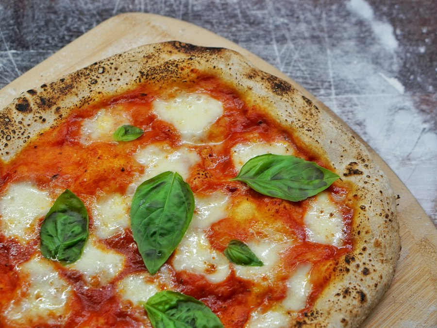
Margherita
San Marzano, fior di latte, taze fesleğen, sızma zeytinyağı.
₺420

48 saat dinlenmiş hamur, San Marzano domates ve 450°C'lik meşe ateşi. Doksan saniyede pişen, bir ömür hatırlanan pizza.


Un, su, tuz, maya ve zaman. Gerisini ateşe bırakıyoruz — çünkü gerçek lezzet acele etmez.
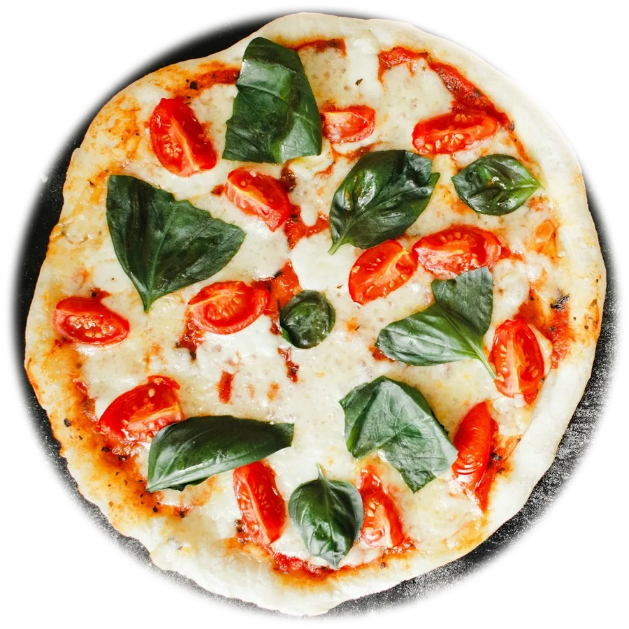
Tip 00 un, %70 hidrasyon, 48 saat soğuk fermantasyon. Hafif, havadar, leopar benekli kenarlar.
Vezüv yamaçlarından DOP domatesler; elle ezilir, yalnızca deniz tuzu eklenir.
Her sabah taze gelen inek sütü mozzarella. Fırında erir, ama asla yağ bırakmaz.
Fırından çıkar çıkmaz eklenen taze fesleğen ve soğuk sıkım sızma zeytinyağı.
Her biri yıllarca rafine edilmiş tarifler. Mevsimine göre değişen malzemeler, değişmeyen bir tutku.
Tüm menüyü gör →
San Marzano, fior di latte, taze fesleğen, sızma zeytinyağı.
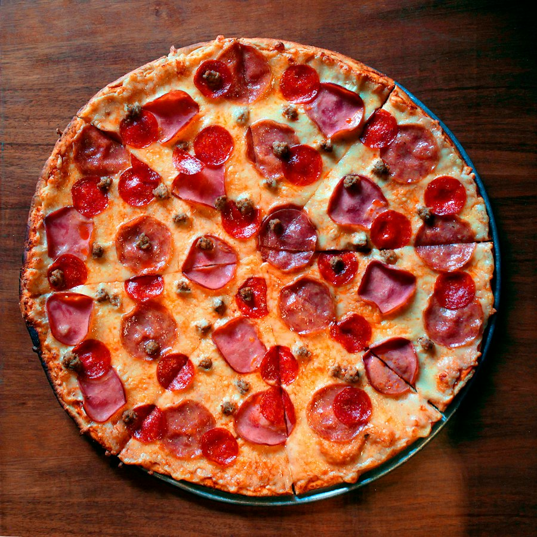
Calabria acı salamı, fior di latte, kırmızı biber yağı, bal damlası.

Siyah trüf kreması, orman mantarları, fior di latte, 24 ay parmesan.
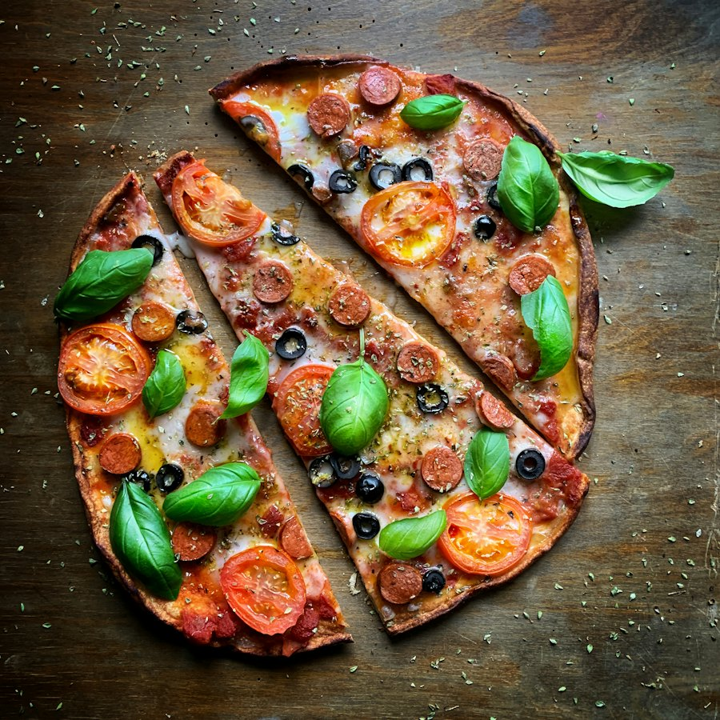
Közlenmiş mevsim sebzeleri, çeri domates, fesleğen pesto, ricotta.
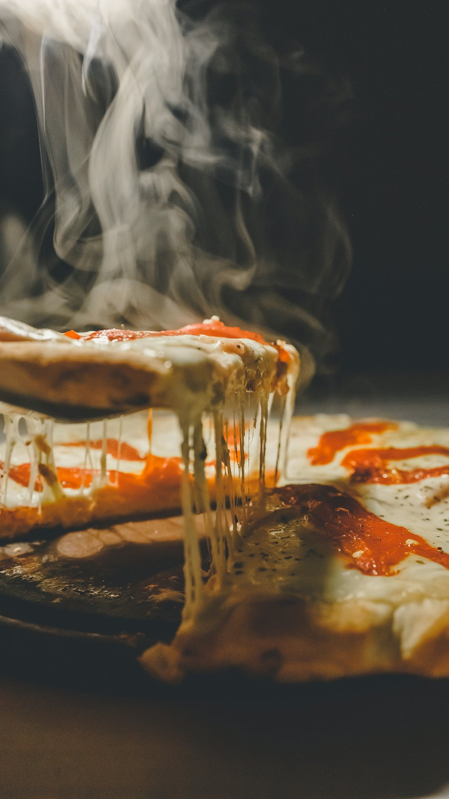
Sürülebilir acı nduja, füme provola, kestane balı, taze kekik.
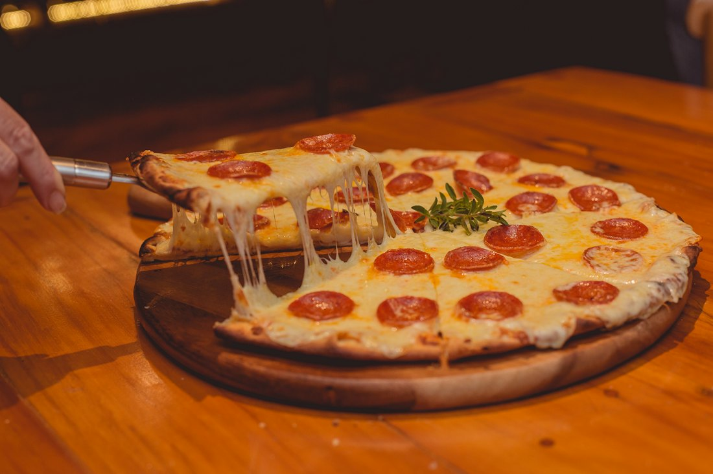
Fior di latte, gorgonzola dolce, taleggio ve parmigiano reggiano.
Hiçbir adımı atlamıyoruz, hiçbirini hızlandırmıyoruz. Her pizza, aynı dört aşamadan özenle geçer.


Napoli'den gelen Tip 00 un, kaynak suyu ve deniz tuzu. Elle yoğrulan hamur, 4°C'de tam 48 saat dinlenir; böylece hafif, sindirimi kolay ve aromatik olur.
Pişirilmeyen, işlenmeyen, sadece elle ezilen San Marzano DOP domatesleri. Tatlı, hafif asidik ve gerçek.
Her sabah taze gelen fior di latte, İtalya'dan getirilen şarküteri ve yerel üreticilerden mevsim sebzeleri.
Napoli'den getirilen tuğlalarla örülmüş fırınımız meşe odunuyla 450°C'ye ulaşır. Pizza 90 saniyede, sürekli çevrilerek pişer.

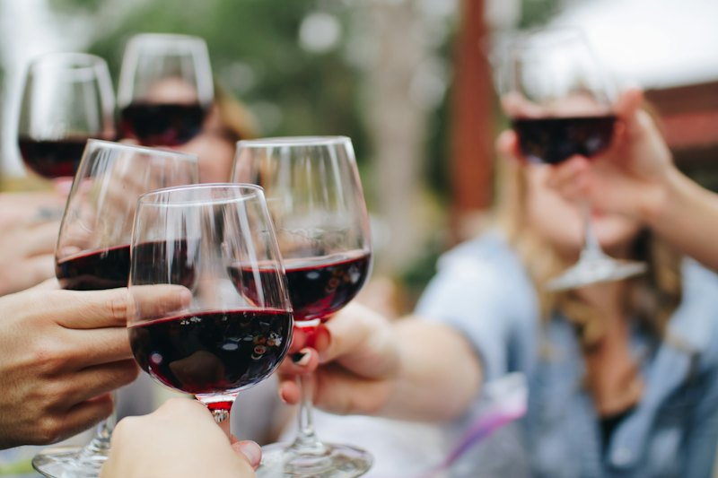
Açık mutfağımızda pizzaiolo'larımızı izlerken, özenle seçilmiş İtalyan şaraplarıyla akşamınızın tadını çıkarın.


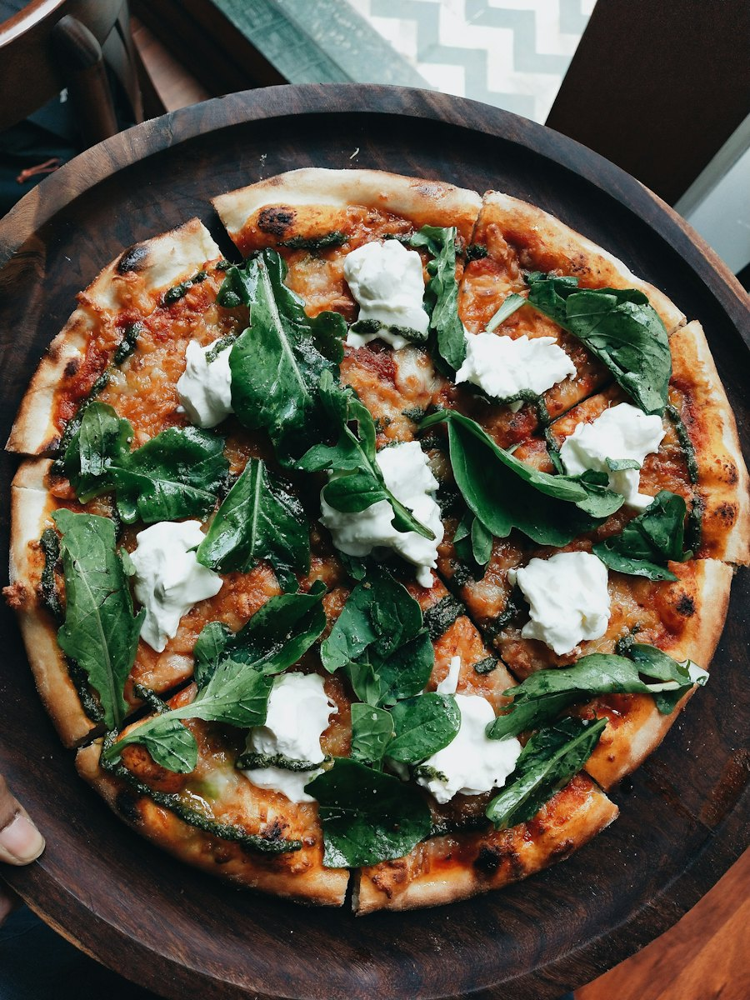
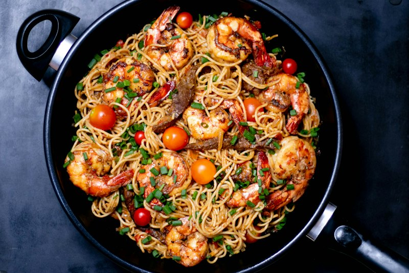
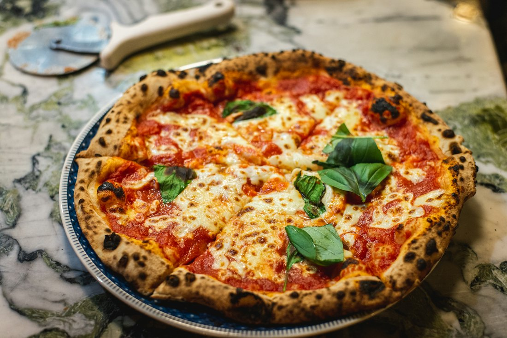
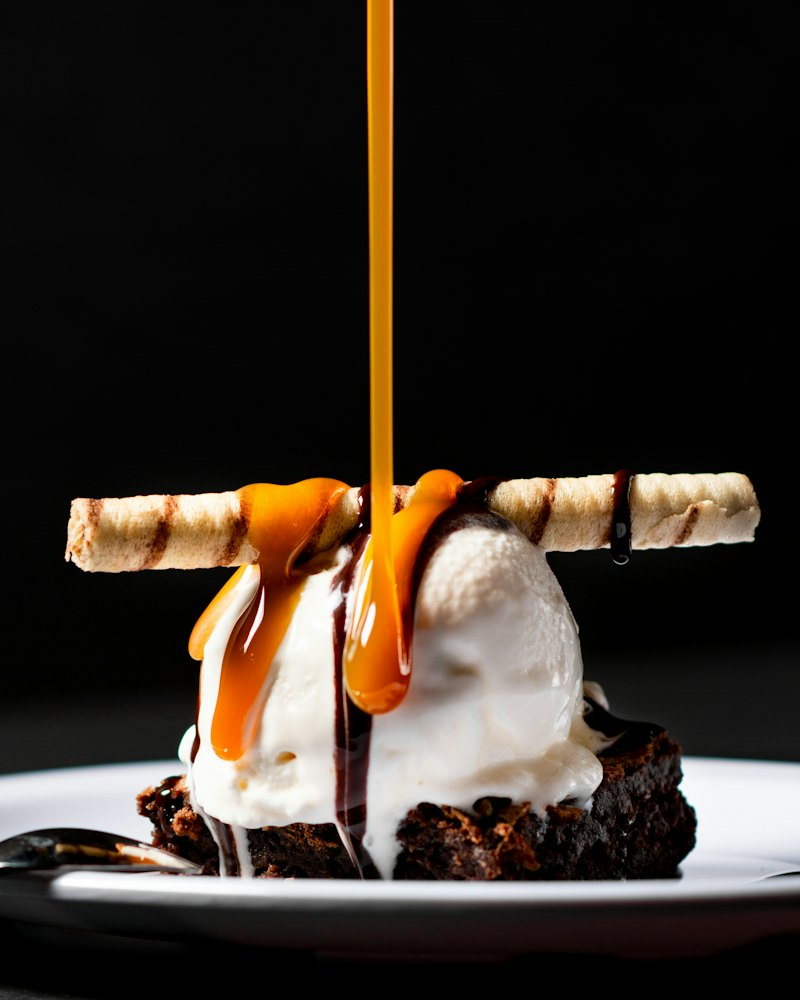
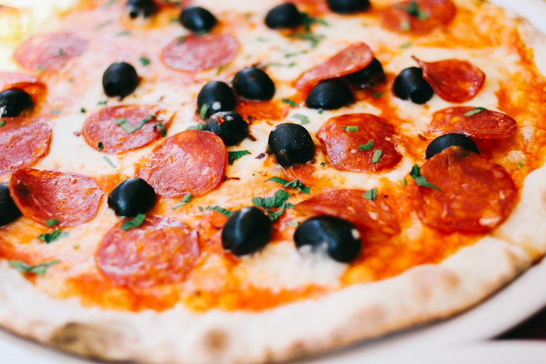
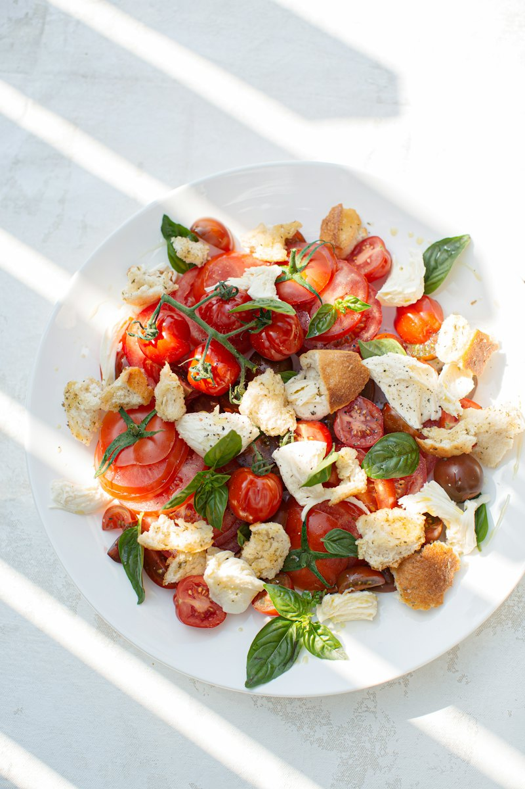
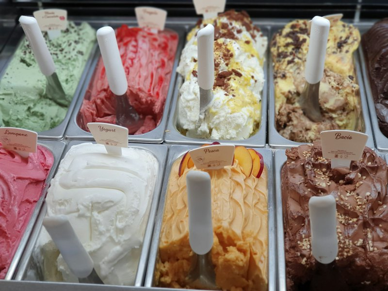
Masanızı ayırtın ya da sıcacık pizzanız kapınıza gelsin.